| 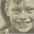 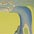 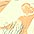 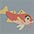 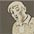 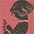 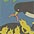 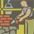 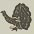 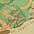 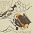 |
|
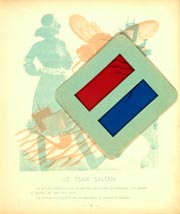
4. Rose Celli and Marguerite Reynier. Album fée [Enchanted Book]. Illustrations by Hélène Guertik. Paris: Flammarion, [1950, c1933]. The "magical" illustrations of famous fairy tale characters for this book are 3D stereogram pictures, composites consisting of a red and blue image that are not perfectly in register. This one is Hans Christian Andersen's little mermaid, in case you are having trouble making it out! 4a. A. S. Pushkin’s Tsar Saltan with the “baguette magique” or magic glasses. The glasses are an inexpensive paper anaglyph filter with one red and one cyan lens that allows the brain to merge the two different images on the page. |